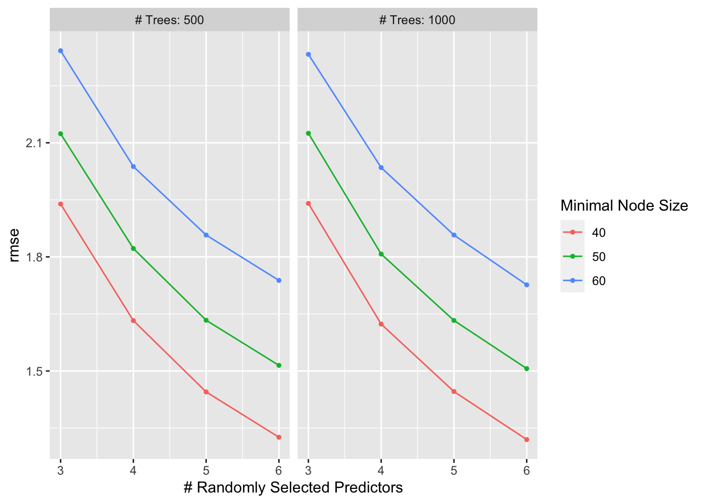
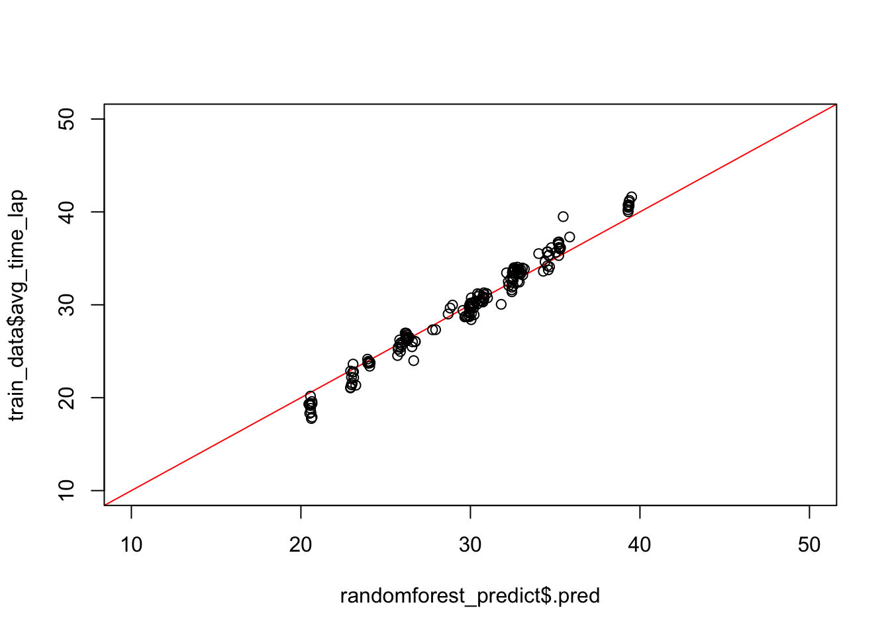
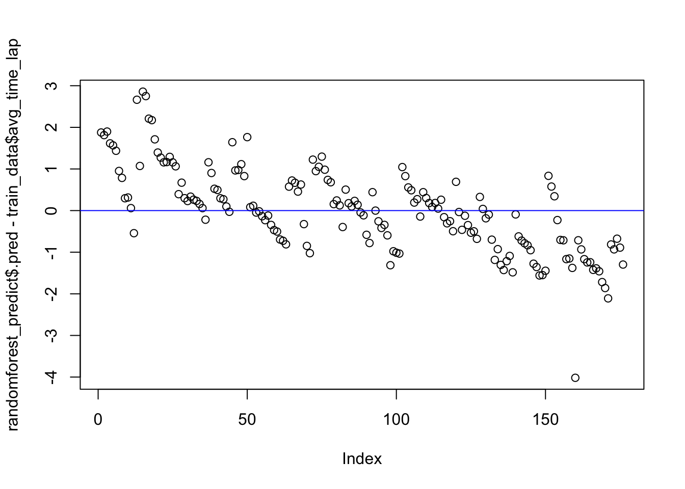

Marble Racing Data Exploration
Brent Cameron
11/20/2021
Before we begin let’s load some packages that we will need for the data exploration, fitting, and modeling of the data please note that If you do not have the packages installed you will have to first install them with the “install.packages()” command
library(tidyverse) #for streamlining manipulating data## ── Attaching packages ─────────────────────────────────────── tidyverse 1.3.1 ──## ✓ ggplot2 3.3.5 ✓ purrr 0.3.4
## ✓ tibble 3.1.4 ✓ dplyr 1.0.7
## ✓ tidyr 1.1.3 ✓ stringr 1.4.0
## ✓ readr 2.0.1 ✓ forcats 0.5.1## ── Conflicts ────────────────────────────────────────── tidyverse_conflicts() ──
## x dplyr::filter() masks stats::filter()
## x dplyr::lag() masks stats::lag()library(tidymodels) # for streamlining fitting data to models## Registered S3 method overwritten by 'tune':
## method from
## required_pkgs.model_spec parsnip## ── Attaching packages ────────────────────────────────────── tidymodels 0.1.3 ──## ✓ broom 0.7.9 ✓ rsample 0.1.0
## ✓ dials 0.0.10 ✓ tune 0.1.6
## ✓ infer 1.0.0 ✓ workflows 0.2.3
## ✓ modeldata 0.1.1 ✓ workflowsets 0.1.0
## ✓ parsnip 0.1.7 ✓ yardstick 0.0.8
## ✓ recipes 0.1.16## ── Conflicts ───────────────────────────────────────── tidymodels_conflicts() ──
## x scales::discard() masks purrr::discard()
## x dplyr::filter() masks stats::filter()
## x recipes::fixed() masks stringr::fixed()
## x dplyr::lag() masks stats::lag()
## x yardstick::spec() masks readr::spec()
## x recipes::step() masks stats::step()
## • Use tidymodels_prefer() to resolve common conflicts.library(broom) #for cleaning up output from lm()
library(here) #for data loading/saving## here() starts at /Users/WWBD/MADA/BrentCameron-MADA-portfoliolibrary(ggplot2) #for plotting
library(gapminder) #For reordering bar charts to be more easily understood
library(rpart) #for fitting tree model##
## Attaching package: 'rpart'## The following object is masked from 'package:dials':
##
## prunelibrary(glmnet) #for fitting LASSO model## Loading required package: Matrix##
## Attaching package: 'Matrix'## The following objects are masked from 'package:tidyr':
##
## expand, pack, unpack## Loaded glmnet 4.1-3library(ranger) #for fitting random forest model
library(vip) #for identifying most important variables in our models (the "VIPS")##
## Attaching package: 'vip'## The following object is masked from 'package:utils':
##
## vilibrary(skimr) #for viewing alternative information about variables
library(doParallel) # for parallel processing for quicker tuning## Loading required package: foreach##
## Attaching package: 'foreach'## The following objects are masked from 'package:purrr':
##
## accumulate, when## Loading required package: iterators## Loading required package: parallelWe can now begin our data exploration/ cleaning We will start the marble racing data exploration by retrieving the data from it’s location in github
Get the Data
marbles <- readr::read_csv('https://raw.githubusercontent.com/rfordatascience/tidytuesday/master/data/2020/2020-06-02/marbles.csv')#Now that we have our packages installed we can begin to explore our data## Rows: 256 Columns: 14## ── Column specification ────────────────────────────────────────────────────────
## Delimiter: ","
## chr (9): date, race, site, source, marble_name, team_name, pole, host, notes
## dbl (5): time_s, points, track_length_m, number_laps, avg_time_lap##
## ℹ Use `spec()` to retrieve the full column specification for this data.
## ℹ Specify the column types or set `show_col_types = FALSE` to quiet this message.Summary of our data tells us that we are dealing with mostly character type variables, with a few being numerical such as the average time of a lap
summary(marbles)## date race site source
## Length:256 Length:256 Length:256 Length:256
## Class :character Class :character Class :character Class :character
## Mode :character Mode :character Mode :character Mode :character
##
##
##
##
## marble_name team_name time_s pole
## Length:256 Length:256 Min. : 17.76 Length:256
## Class :character Class :character 1st Qu.: 28.40 Class :character
## Mode :character Mode :character Median : 36.28 Mode :character
## Mean :190.84
## 3rd Qu.:338.16
## Max. :492.01
## NA's :3
## points track_length_m number_laps avg_time_lap
## Min. : 0.000 Min. :11.90 Min. : 1.00 Min. :17.76
## 1st Qu.: 0.000 1st Qu.:12.62 1st Qu.: 1.00 1st Qu.:25.94
## Median : 3.000 Median :13.02 Median : 5.00 Median :30.05
## Mean : 6.453 Mean :13.22 Mean : 6.25 Mean :29.70
## 3rd Qu.:11.250 3rd Qu.:14.13 3rd Qu.:10.25 3rd Qu.:33.65
## Max. :26.000 Max. :14.55 Max. :16.00 Max. :41.62
## NA's :128 NA's :3
## host notes
## Length:256 Length:256
## Class :character Class :character
## Mode :character Mode :character
##
##
##
## Using the glimpse command tells us that we have variable names including team name, name of the marble racing, the length of the track, number of laps,etc.
glimpse(marbles)## Rows: 256
## Columns: 14
## $ date <chr> "15-Feb-20", "15-Feb-20", "15-Feb-20", "15-Feb-20", "15…
## $ race <chr> "S1Q1", "S1Q1", "S1Q1", "S1Q1", "S1Q1", "S1Q1", "S1Q1",…
## $ site <chr> "Savage Speedway", "Savage Speedway", "Savage Speedway"…
## $ source <chr> "https://youtu.be/JtsQ_UydjEI?t=356", "https://youtu.be…
## $ marble_name <chr> "Clementin", "Starry", "Momo", "Yellow", "Snowy", "Razz…
## $ team_name <chr> "O'rangers", "Team Galactic", "Team Momo", "Mellow Yell…
## $ time_s <dbl> 28.11, 28.37, 28.40, 28.70, 28.71, 28.72, 28.96, 29.11,…
## $ pole <chr> "P1", "P2", "P3", "P4", "P5", "P6", "P7", "P8", "P9", "…
## $ points <dbl> NA, NA, NA, NA, NA, NA, NA, NA, NA, NA, NA, NA, NA, NA,…
## $ track_length_m <dbl> 12.81, 12.81, 12.81, 12.81, 12.81, 12.81, 12.81, 12.81,…
## $ number_laps <dbl> 1, 1, 1, 1, 1, 1, 1, 1, 1, 1, 1, 1, 1, 1, 1, 1, 10, 10,…
## $ avg_time_lap <dbl> 28.11, 28.37, 28.40, 28.70, 28.71, 28.72, 28.96, 29.11,…
## $ host <chr> "No", "No", "No", "No", "No", "No", "No", "No", "No", "…
## $ notes <chr> NA, NA, NA, NA, NA, NA, NA, NA, NA, NA, NA, NA, NA, NA,…In addition, utilizing the “skimr” package allows us to more closely view the individual variables
skim(marbles)| Name | marbles |
| Number of rows | 256 |
| Number of columns | 14 |
| _______________________ | |
| Column type frequency: | |
| character | 9 |
| numeric | 5 |
| ________________________ | |
| Group variables | None |
Variable type: character
| skim_variable | n_missing | complete_rate | min | max | empty | n_unique | whitespace |
|---|---|---|---|---|---|---|---|
| date | 0 | 1.00 | 8 | 9 | 0 | 16 | 0 |
| race | 0 | 1.00 | 4 | 4 | 0 | 16 | 0 |
| site | 0 | 1.00 | 7 | 15 | 0 | 8 | 0 |
| source | 0 | 1.00 | 34 | 34 | 0 | 16 | 0 |
| marble_name | 0 | 1.00 | 4 | 9 | 0 | 32 | 0 |
| team_name | 0 | 1.00 | 6 | 16 | 0 | 16 | 0 |
| pole | 128 | 0.50 | 2 | 3 | 0 | 16 | 0 |
| host | 0 | 1.00 | 2 | 3 | 0 | 2 | 0 |
| notes | 249 | 0.03 | 37 | 100 | 0 | 7 | 0 |
Variable type: numeric
| skim_variable | n_missing | complete_rate | mean | sd | p0 | p25 | p50 | p75 | p100 | hist |
|---|---|---|---|---|---|---|---|---|---|---|
| time_s | 3 | 0.99 | 190.84 | 169.13 | 17.76 | 28.40 | 36.28 | 338.16 | 492.01 | ▇▁▁▇▁ |
| points | 128 | 0.50 | 6.45 | 7.74 | 0.00 | 0.00 | 3.00 | 11.25 | 26.00 | ▇▂▂▁▁ |
| track_length_m | 0 | 1.00 | 13.22 | 0.95 | 11.90 | 12.62 | 13.02 | 14.13 | 14.55 | ▅▅▂▁▇ |
| number_laps | 0 | 1.00 | 6.25 | 5.53 | 1.00 | 1.00 | 5.00 | 10.25 | 16.00 | ▇▁▃▂▂ |
| avg_time_lap | 3 | 0.99 | 29.70 | 5.55 | 17.76 | 25.94 | 30.05 | 33.65 | 41.62 | ▃▆▇▇▂ |
#Data Examination/ Cleaning ####################################
There are several variables that do not seem significant, for instance, notes is comprised of almost exlusively NA variables, while variables such as source simply show where to find the race itself on the internet
We will create a copy of the dataframe to avoid manipulating the raw data
marbles_copy<-marblesAlthough notes will be removed, some discrepancy in the data could be explained by any of the (seven total) notes variables, as such, we will examine the notes, as well as the races that they correspond to, in order to determine if it would be important to keep them
Examine the notes
marbles_copy$notes[!is.na(marbles_copy$notes)]## [1] "Note: Came to complete stop in Lap 14"
## [2] "*Note: A yellow SAFETY flag is issued due to incident in Lap 1."
## [3] "Shortly after, a red SUSPENDED flag is issued to restart the race, due to major blockage."
## [4] "**Note: Upon the restart, another red flag is issued due to a track invasion incident by a rowdy fan"
## [5] "Race resumed normally after the culprit is escorted by security marbles"
## [6] "*Note: Slight incident between Speedy and Clementin"
## [7] "Ultimately, JMRC reviews and deems no action is necessary"Examine the dates and teams they correspond with
marbles_copy[!(is.na(marbles_copy$notes)), ]## # A tibble: 7 × 14
## date race site source marble_name team_name time_s pole points
## <chr> <chr> <chr> <chr> <chr> <chr> <dbl> <chr> <dbl>
## 1 22-Mar-20 S1R6 Short Circuit https… Sublime Limers NA <NA> 0
## 2 29-Mar-20 S1R7 Razzway https… Smoggy Hazers 331. <NA> 25
## 3 29-Mar-20 S1R7 Razzway https… Orangin O'rangers 332. <NA> 19
## 4 29-Mar-20 S1R7 Razzway https… Anarchy Balls of… 334. <NA> 10
## 5 29-Mar-20 S1R7 Razzway https… Rapidly Savage S… 336. <NA> 6
## 6 4-Apr-20 S1Q8 Midnight Bay https… Speedy Savage S… 24.5 P1 NA
## 7 4-Apr-20 S1Q8 Midnight Bay https… Clutter Balls of… 25.2 P3 NA
## # … with 5 more variables: track_length_m <dbl>, number_laps <dbl>,
## # avg_time_lap <dbl>, host <chr>, notes <chr>It appears that each of the seven notes corresponds to an individual marble (one marble did not have a particularly bad day)(although four out of the seven happened on March 29, 2020)
In addition, the notes may serve as valuable later, we will not keep the notes variable in our final dataset but will keep them here for reference in case of any strange occurences
Now that we have examined the “notes” variable to determine if anything is out of the ordinary, we will now clean our data by getting rid of all “NA” in our variables
We will select the variables that we think will be useful, for now we will select every variable that is not “source”, “host”, “pole”, “points”, and “notes”
For ease of dropping the missing variables between “poles” and “points”, we will simply drop the variables
marbles_chosen <-marbles_copy %>% select(c(date, race, site, marble_name, team_name, time_s, track_length_m, number_laps, avg_time_lap))Now we drop all “NA” data from our variables
marbles_cleaned <- marbles_chosen %>% na.omit()#Exploration ##################
With our basic cleaning completed we will turn to examining our data more closely to identify the best predictor variables for our models
First we will plot the average time it takes for the marbles to make a lap
timeplot1 <-ggplot(marbles_cleaned,aes(avg_time_lap, number_laps)) +
geom_bar(stat = "identity")
timeplot1 It makes sense that the average lap time would be clustered together (average around 30), since with the exception of marble material or track set up for the races, there are not many other factors that come into play in regards to time of race
We will now plot to see the interaction between time and track length We will also use color to differentiate and identify any causation that could be found
timeplot2 <- ggplot(marbles_cleaned,aes(track_length_m, time_s, col = factor(number_laps))) +
geom_point()
timeplot2It seems that time and track length can be predicted by number of laps
timeplot3 <- ggplot(marbles_cleaned,aes(number_laps,track_length_m)) + geom_point() + geom_smooth()
timeplot3## `geom_smooth()` using method = 'loess' and formula 'y ~ x'## Warning in simpleLoess(y, x, w, span, degree = degree, parametric =
## parametric, : pseudoinverse used at 0.925## Warning in simpleLoess(y, x, w, span, degree = degree, parametric =
## parametric, : neighborhood radius 9.075## Warning in simpleLoess(y, x, w, span, degree = degree, parametric =
## parametric, : reciprocal condition number 0## Warning in simpleLoess(y, x, w, span, degree = degree, parametric =
## parametric, : There are other near singularities as well. 81## Warning in predLoess(object$y, object$x, newx = if
## (is.null(newdata)) object$x else if (is.data.frame(newdata))
## as.matrix(model.frame(delete.response(terms(object)), : pseudoinverse used at
## 0.925## Warning in predLoess(object$y, object$x, newx = if
## (is.null(newdata)) object$x else if (is.data.frame(newdata))
## as.matrix(model.frame(delete.response(terms(object)), : neighborhood radius
## 9.075## Warning in predLoess(object$y, object$x, newx = if
## (is.null(newdata)) object$x else if (is.data.frame(newdata))
## as.matrix(model.frame(delete.response(terms(object)), : reciprocal condition
## number 0## Warning in predLoess(object$y, object$x, newx = if
## (is.null(newdata)) object$x else if (is.data.frame(newdata))
## as.matrix(model.frame(delete.response(terms(object)), : There are other near
## singularities as well. 81It seems that the most common number of laps is seven while the most common track length is 15 meters
We will use avg_time_lap for our main predictor ####################### #Analysis #######################
Now that we have finished examining our data, we will start our analysis by separating our data into a training set for tuning and evaluating the models, and a test set to compare our results to ensure strength of fit
We first set our seed, which is simply initializing a pseudorandom number generator (makes sure we get the same results each time we run the data (can be any number of choice though)), then we split the data
set.seed(123)
#We will now split the data by 70% for our training data and 30% for our testing
data_split <- initial_split(marbles_cleaned, prop = 7/10,#7/10 stands for 70% training
strata = avg_time_lap) # and the rest (30%) for testing)
#Now we will organize our sets of training and test data
train_data <- training(data_split)
test_data <- testing(data_split)
#We will now utilize a 5-fold cross validation, 5 times repeated, we will
#stratify on "avg_time_lap" for the CV folds
FoldCV5 <- vfold_cv(train_data, v = 5, repeats = 5, strata = "avg_time_lap")
#Now we will create our recipe for our data and fitting
#We will code the categorical variables as dummy variables
recipe_avg_time_lap <-recipe(avg_time_lap ~ ., data = train_data) %>%
step_dummy(all_nominal_predictors())#Tuning and Modeling ####################### Now that we have decided on what our main predictor variable will be (avg_time_lap) and created our data sets (training and test), we can begin tuning and modeling
We will fit a null model, single tree model, LASSO model, and a random forest model (total of four) Our steps should be as follows… 1. Model Specification 2. Workflow Definition 3. Tuning Grid Specification 4. Tuning Using Cross- Validation and the tune_grid() function
Code Used for Tree model can be found from Tidymodels Tutorial https://www.tidymodels.org/start/tuning/
#NULL MODEL #################################### Before we can adequately assess if any of our models posess good fit of our data we need to first create our null model that we can compare the rest of our models to, if none of our other models perform better than the Null, they are not worth pursuing
We need to specify our model before we start computing
lm_model <- linear_reg() %>%
set_engine('lm') %>%
set_mode('regression')We will now compute the performance of a null model for our training and test data (doesn’t use any predictor information)
#Train Data Computing
train_null_recipe <- lm(avg_time_lap ~ 1, data = train_data)
#Calculating RMSE
train_null_recipe %>% augment(newdata = train_data) %>%
rmse(truth = avg_time_lap, estimate = .fitted)## # A tibble: 1 × 3
## .metric .estimator .estimate
## <chr> <chr> <dbl>
## 1 rmse standard 5.63#Test Data Computing
test_null_recipe <- lm(avg_time_lap ~ 1, data = test_data)
#Calculating RMSE
test_null_recipe %>% augment(newdata = test_data) %>%
rmse(truth = avg_time_lap, estimate = .fitted)## # A tibble: 1 × 3
## .metric .estimator .estimate
## <chr> <chr> <dbl>
## 1 rmse standard 5.30When comparing our models, if the RMSE (our chosen measure of significance) of our other models is worse than what the null model
#SINGLE TREE MODEL #################################### We will now start with our first comparison model (the single tree model)
#Specify Model
tune_spec_TREE <-
decision_tree(
cost_complexity = tune(),
tree_depth = tune(),
) %>%
set_engine("rpart") %>%
set_mode("regression")
tune_spec_TREE## Decision Tree Model Specification (regression)
##
## Main Arguments:
## cost_complexity = tune()
## tree_depth = tune()
##
## Computational engine: rpart#We will now define the workflow for the tree
workflow_TREE <- workflow() %>%
add_model(tune_spec_TREE) %>%
add_recipe(recipe_avg_time_lap) We will now specify the tuning grid
grid_TREE <- grid_regular(cost_complexity(),
tree_depth(),
levels = 5)
grid_TREE## # A tibble: 25 × 2
## cost_complexity tree_depth
## <dbl> <int>
## 1 0.0000000001 1
## 2 0.0000000178 1
## 3 0.00000316 1
## 4 0.000562 1
## 5 0.1 1
## 6 0.0000000001 4
## 7 0.0000000178 4
## 8 0.00000316 4
## 9 0.000562 4
## 10 0.1 4
## # … with 15 more rowsWe will now tune using cross validation and the tune_grid() function
res_TREE<-
workflow_TREE %>%
tune_grid(resamples = FoldCV5 , grid = grid_TREE, metrics = metric_set(rmse))Now we will run the autoplot() function to look at some diagnostics
res_TREE %>%
autoplot()
Now we will select the best decision tree model
TOP_TREE <- res_TREE %>%
select_best("rmse")
TOP_TREE## # A tibble: 1 × 3
## cost_complexity tree_depth .config
## <dbl> <int> <chr>
## 1 0.0000000001 8 Preprocessor1_Model11Now we need to finalize the workflow
workflow_FINAL <- workflow_TREE %>% finalize_workflow(TOP_TREE)
workflow_FINAL## ══ Workflow ════════════════════════════════════════════════════════════════════
## Preprocessor: Recipe
## Model: decision_tree()
##
## ── Preprocessor ────────────────────────────────────────────────────────────────
## 1 Recipe Step
##
## • step_dummy()
##
## ── Model ───────────────────────────────────────────────────────────────────────
## Decision Tree Model Specification (regression)
##
## Main Arguments:
## cost_complexity = 1e-10
## tree_depth = 8
##
## Computational engine: rpartNow we will utilize the fit() function to fit to the training data
fit_FINAL_TREE <- workflow_FINAL %>% last_fit(data_split)Now we will collect the data from our fit
fit_FINAL_TREE %>% collect_metrics()## # A tibble: 2 × 4
## .metric .estimator .estimate .config
## <chr> <chr> <dbl> <chr>
## 1 rmse standard 0.567 Preprocessor1_Model1
## 2 rsq standard 0.989 Preprocessor1_Model1We will also collect the predictions
pred_TREE <- fit_FINAL_TREE %>% collect_predictions()We will now make two plots, one that shows model predictions from the tuned model compared to actual outcomes, and one that plots residuals (RMSE)
pred_tree_plot <- ggplot(data = pred_TREE, aes(x = .pred, y = avg_time_lap)) +
geom_point() +
labs(title = "Plot Comparing Model Predictions from Tuned to Actual",
x = "Predictions", y = "Outcomes")
#view the plot
pred_tree_plotWe need to calculate our residuals before we can plot the second chart Note that the residuals is the difference between our main predictor and the others
pred_TREE$residuals <- pred_TREE$avg_time_lap - pred_TREE$.predNow we will plot our residuals
resid_tree_plot <- ggplot(data= pred_TREE, aes(x=.pred , y=residuals)) + geom_point() +
labs(title="Plot of Residuals",
x="Predictions", y= "Residuals")
#view the plot
resid_tree_plot Now we will compare our residual plot to the null model
tree_model_performance <- res_TREE %>% show_best(n=1)
print(tree_model_performance)## # A tibble: 1 × 8
## cost_complexity tree_depth .metric .estimator mean n std_err .config
## <dbl> <int> <chr> <chr> <dbl> <int> <dbl> <chr>
## 1 0.0000000001 8 rmse standard 0.943 25 0.0529 Preprocesso…The null tree and decision tree model perform very similarly, with the new model performing only slightly better than the null, lets examine the other models ######################################### #LASSO ######################################### Now we will construct a LASSO model code used from https://www.tidymodels.org/start/case-study/
#We will once again start by constructing our model
lasso_model <- linear_reg() %>%
set_mode("regression") %>%
set_engine("glmnet") %>%
set_args(penalty = tune(), mixture = 1) Please note that mixture refers to a number between zero and one that is the proportion of L1 regularization (lasso) in the model. In other, words, because we are using mixture = 1, we are utilizing a “pure” lasso model here
We will now create our workflow
lasso_workflow <-workflow() %>%
add_model(lasso_model) %>%
add_recipe(recipe_avg_time_lap)Now we will tune our LASSO model As our last model took a long time to run, we will utilize parallel computing to make it faster
library(doParallel)
ncores = 5 #Ncores is used to select the number of cores you want to recruit
#for processing, different computers will naturally have different ideal numbers
cluster <- makePSOCKcluster(5) #make PSOCKcluster stands for creating a sock
#cluster within the 'snow' package, this allowsa for increased computing time
registerDoParallel(5) #registers parallel backend with foreach packageNow we will create our tuning grid
lasso_reg_grid <- tibble(penalty = 10^seq(-3, 0, length.out = 30))
#Now we tune the model
lasso_tune_res <- lasso_workflow %>%
tune_grid(resamples = FoldCV5,
grid = lasso_reg_grid,
control = control_grid(save_pred = TRUE),
metrics = metric_set(rmse))We will now turn off parallel clustering, the reason we turn the clustering off after each use is to prevent computations and analysis from being slowed in later data analysis, fitting, modeling, etc.
stopCluster(cluster)We will now evaluate our LASSO model
lasso_tune_res %>% autoplot()Now we will get the tuned model that performs best
best_lasso <- lasso_tune_res %>% select_best(metric = "rmse")
#We now finalize our workflow with the best model
best_lasso_wf <- lasso_workflow %>% finalize_workflow(best_lasso)
#We now fit our best performing model
best_lasso_fit <- best_lasso_wf %>%
fit(data = train_data)
lasso_pred <- predict(best_lasso_fit, train_data)Now we will repeat our steps like the past model and plot LASSO variables as a function of tuning parameter
x <- best_lasso_fit$fit$fit$fit
plot(x, "lambda")When a variable is 0 it is no longer being used in the model, thus we are using all variables that are only part of the best fit model
tidy(extract_fit_parsnip(best_lasso_fit)) %>% filter(estimate !=0)## # A tibble: 38 × 3
## term estimate penalty
## <chr> <dbl> <dbl>
## 1 (Intercept) -28.2 0.0574
## 2 time_s 0.0114 0.0574
## 3 track_length_m 4.18 0.0574
## 4 date_X14.Mar.20 1.88 0.0574
## 5 date_X15.Mar.20 3.47 0.0574
## 6 date_X16.Feb.20 0.156 0.0574
## 7 date_X21.Mar.20 -1.09 0.0574
## 8 date_X23.Feb.20 0.237 0.0574
## 9 date_X28.Mar.20 -0.554 0.0574
## 10 date_X29.Feb.20 -0.161 0.0574
## # … with 28 more rowsNow we plot the observed/predicted and residual plots We will try a new way to plot that does not require calculating the residuals before hand
First we will plot with the observe/predicted values This code will plot a line with which we hope to see overlap with the values, thus signaling that the model is a good fit
For our x and y limits, the values 10 and 100 were chosen because they allow for the clearest illustration of the values in the plane The abline is used to add lines to the graph
plot(lasso_pred$.pred,train_data$avg_time_lap, xlim = c(10, 50), ylim = c(10, 100))
abline(a = 0, b = 1, col = 'red') #b = 1 creates a 45 degree diagonal lineNow our residual plot, note that because we are subtracting the two values used this time instead of putting them together, since residuals are by definition the difference between the regular predictors and the chosen predictor
plot(lasso_pred$.pred-train_data$avg_time_lap)
abline(a=0, b=0, col = 'blue') #b = 0 creates a straight horizontal lineLet’s look at the performance of the model
lasso_performance <- lasso_tune_res %>%
show_best(n = 1)
print(lasso_performance)## # A tibble: 1 × 7
## penalty .metric .estimator mean n std_err .config
## <dbl> <chr> <chr> <dbl> <int> <dbl> <chr>
## 1 0.0574 rmse standard 0.872 25 0.0376 Preprocessor1_Model18The Lasso model seems to have better fit than than null, we will continue with out last #model to determine if it is better ################################ #RANDOMFOREST ################################ Both of our past models have not extremely significant fit, we will now repeat the steps with a random forest model in the hopes of finding significance
Please note that for Random Forest models, “num.threads” and importance is required or else all models will fail
Repeat the steps of the last models in tuning and setting workflow
randomforest_model <- rand_forest() %>%
set_args(mtry = tune(),
trees = tune(),
min_n = tune()
) %>%
#Now we set the engine
set_engine("ranger",
num.threads = 5,
importance = "permutation") %>%
#We select either the continuous or binary classification
set_mode("regression")We will set our workflow once again
randomforest_workflow <- workflow() %>%
add_model(randomforest_model) %>%
add_recipe(recipe_avg_time_lap)We will now repeat our steps as the first two models to specify our tuning grid We will use parallel computing once again to vastly decrease the time it takes to compute the model- since we have already use code previously to create it we now only need to use our name designation for our cluster and it will resume
cluster <-makePSOCKcluster(5)
registerDoParallel(5)Now we will tune the grid
randomforest_grid <- expand.grid(mtry = c(3, 4, 5, 6), min_n = c(40, 50, 60),
trees = c(500, 1000))We will now tune the model while optimizing RMSE
randomforest_tune_res <- randomforest_workflow %>%
tune_grid(resamples = FoldCV5, #This is the name of our previous CV object
grid = randomforest_grid,#This is the grid of values we want to try
metrics = metric_set(rmse))Now we turn off our parallel clustering again to prevent slowing processing
stopCluster(cluster)Now we plot the performance of our different tuning parameters
randomforest_tune_res %>% autoplot()
Now we will obtain the best performing model
best_randomforest <- randomforest_tune_res %>% select_best(metric = "rmse")Finalize the workflow with this model
best_randomforest_workflow <- randomforest_workflow %>% finalize_workflow(best_randomforest)Now we fit the best performing model
best_randomforest_fit <- best_randomforest_workflow %>% fit(data = train_data)
randomforest_predict <-predict(best_randomforest_fit, train_data)although all variables stay in a random forest model, we can examine which are the most imoportant using the ‘vip’ package
x<- best_randomforest_fit$fit$fit$fitplot the variables by importance
vip(x, num_features = 10)as can be seen from the plot, track length is the strongest factor, with time_s being second. This makes sense as length of the course and time of laps are both key when determining how long it will take to complete the race
We will now plot the observed/ predicted and residual plots and compare them we will repeat the same process used as last time
plot(randomforest_predict$.pred,train_data$avg_time_lap,
xlim =c(10, 50), ylim=c(10, 50),
abline(a = 0, b = 1, col = 'red'))
residual plot
plot(randomforest_predict$.pred-train_data$avg_time_lap)
abline(a = 0, b = 0, col = 'blue')
now that we have finished plotting lets look at our model performance
randomforest_performance <- randomforest_tune_res %>% show_best(n = 1)
print(randomforest_performance)## # A tibble: 1 × 9
## mtry trees min_n .metric .estimator mean n std_err .config
## <dbl> <dbl> <dbl> <chr> <chr> <dbl> <int> <dbl> <chr>
## 1 6 1000 40 rmse standard 1.32 25 0.0327 Preprocessor1_Model16The mean RMSE is 1.31, which is not significant
The LASSO model had the lowest RMSE, which even though is not extremely significant, still puts it in a position to be chosen as the most meaningful, thus we will choose it as our final model
#final model (LASSO) fitting ########################################
#lets restart our parallel processing
cluster<- makePSOCKcluster(5)
registerDoParallel(5)Now we will fit on the training set evaluating with the test data
LASSO_fit_final <-best_lasso_wf %>% last_fit(data_split)We will now use a trained workflow to predict using our test data
final_test_performance<-LASSO_fit_final %>% collect_predictions()
print(final_test_performance)## # A tibble: 77 × 5
## id .pred .row avg_time_lap .config
## <chr> <dbl> <int> <dbl> <chr>
## 1 train/test split 29.4 1 28.1 Preprocessor1_Model1
## 2 train/test split 29.4 2 28.4 Preprocessor1_Model1
## 3 train/test split 29.3 7 29.0 Preprocessor1_Model1
## 4 train/test split 29.1 9 29.3 Preprocessor1_Model1
## 5 train/test split 29.4 10 29.5 Preprocessor1_Model1
## 6 train/test split 29.5 11 30.0 Preprocessor1_Model1
## 7 train/test split 29.5 12 30.1 Preprocessor1_Model1
## 8 train/test split 29.5 13 30.3 Preprocessor1_Model1
## 9 train/test split 32.8 20 32.6 Preprocessor1_Model1
## 10 train/test split 33.0 24 33.1 Preprocessor1_Model1
## # … with 67 more rowsWe will also collect our metrics since it tells us more information
final_test_performance_RMSE <- LASSO_fit_final %>% collect_metrics()
print(final_test_performance_RMSE)## # A tibble: 2 × 4
## .metric .estimator .estimate .config
## <chr> <chr> <dbl> <chr>
## 1 rmse standard 0.813 Preprocessor1_Model1
## 2 rsq standard 0.978 Preprocessor1_Model1Finally we will turn of our paralell processing one last time When comparing the prediction of our final model with the actual data, it appears somewhat close but could definitely be better, which indicates that we mostly avoided overfitting, but there may be one or two things we could improve
stopCluster(cluster)unfortunately, when we examine the RMSE of our data we can see that it performs similarly as with the last data. While this shows the model is fairly consistent it still indicates that the model is not an adequate fit for our data
We will finally plot our final models predicted compared with observed values and another plot for residuals
predicted versus observed
plot(final_test_performance$.pred, test_data$avg_time_lap,
xlim = c (10, 50), ylim = c(10, 50))
abline(a = 0, b = 1, col = 'red')residual plot
plot(final_test_performance$.pred-test_data$avg_time_lap)
abline(a = 0, b = 0, col = 'red')While the LASSO model performed best, there appears to be a few things that we can improve upon to make the model fit better. Additionally, the track length feature could be used as another, perhaps more adequate, measure of model performance.